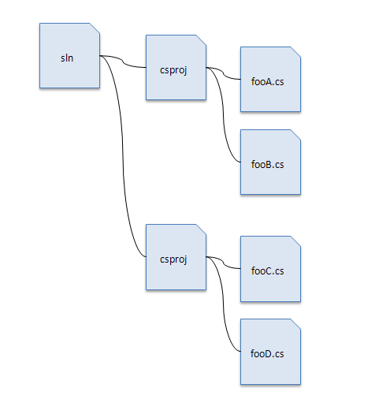
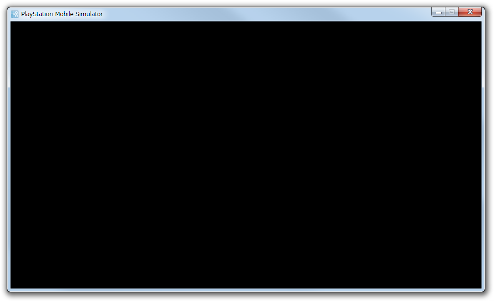

この文書では簡単な2Dシューティングゲームの作成を通じて、ゲームアプリケーションの基本的な仕組みや、PSM SDKでの開発手法を説明していきます。
Contents
最初に、最小のPSMプログラムを実行してみましょう。
PSM Studioを起動し、[File] - [Open..] でSample/Tutorialフォルダーを開いてください。
Sample/Tutorialはデフォルトで以下の場所にインストールされています。
- Windows XPの場合: "C:/Documents and Settings/All Users/Documents/Psm/"
- Windows 7の場合: "C:/Users/Public/Documents/Psm/"
sample/Tutorial/Sample01

拡張子slnの付いたファイルはソリューションファイルといい、プロジェクトファイルの構成が記述されています。
拡張子csprojの付いたファイルはプロジェクトファイルといい、ソースコード(csファイル)の構成やビルド方法などが記述されています。
アプリケーションを構築するためのSample01フォルダー以下を「プロジェクト」といいます。
※「プロジェクトファイル csproj」と「プロジェクト」は意味が違うので注意してください。
図1 ソリューションファイルとプロジェクトファイルの構成関係
ソリューションファイルがプロジェクトの起点になりますので、アプリケーションの開発を始める時はこのファイルを開いてください。
ソリューションファイルを開いたら、ビルドを行い、F5キーで実行します。

おめでとうございます！ ただ、このプログラムは真っ黒な画面が表示されるだけで、他には何も起こりません。 ウィンドウ右上の×ボタンをクリックするか、PSM StudioでShift+F5キーを押してプログラムを終了してください。
では、ソースコードをみてみましょう。 ソースコードを見るには、左側のソリューションエクスプローラ内のAppMain.csをダブルクリックしてください。
public class AppMain { static protected GraphicsContext graphics; public static void Main (string[] args) { Initialize (); while (true) { SystemEvents.CheckEvents(); Update (); Render (); } } public static void Initialize () { graphics = new GraphicsContext(); } public static void Update () { } public static void Render () { graphics.Clear(); graphics.SwapBuffers(); } }
ここでは、Main()、Initialize()、SystemEvents.CheckEvents()、Update()、Render()、SwapBuffers()に注目します。
Main()
Initialize()
while
次にwhileでループに入ります。つまりこの中でSystemEvents.CheckEvents()とUpdate()、Render()を繰り返し処理します。
SystemEvents.CheckEvents()
- SystemEvents.CheckEvents ()でOS依存のイベントをチェックします。例えばAndroidデバイスでは、アプリケーションが最小化されたイベントなどをここで検知します。Windowsではウィンドウメッセージの処理などをここで検知します。
Update()
- 主にCPUに任せる計算処理などをUpdate()内に記述します。
Render()
- 主に描画処理やGPUに任せる処理などをRender()内に記述します。Render()内では最初にgraphics.Clear()でフレームバッファをクリアします。
SwapBuffers()
- SwapBuffers()は垂直同期のタイミングでフレームバッファを切り替えます。
一番最後の「垂直同期のタイミングでフレームバッファを切り替える」ですが、この部分を詳しく説明します。
プログラムがどのように動いているのかを分かりやすくするために、プログラムを以下のように変えてみます。 <-の箇所を追加します。
public class AppMain { static protected GraphicsContext graphics; static int colorValue=0; //<- here. public static void Main (string[] args) { Initialize (); while (true) { SystemEvents.CheckEvents (); Update (); Render (); } } public static void Initialize () { graphics = new GraphicsContext(); } public static void Update () { colorValue++; //<- here. if(colorValue>255) //<- here. colorValue=0; //<- here. graphics.SetClearColor(colorValue, colorValue, colorValue, 255);//<- here. } public static void Render () { graphics.Clear(); graphics.SwapBuffers(); } }
このプログラムを実行すると、画面の背景色がどんどん白くなって、また黒に切り替わります。
graphics.SetClearColor(int r, int g, int b, int a)は引数で渡した色で画面をクリアします。
r=255, g=255, b=255は白になります。
aはアルファと呼ばれ、透明の度合いを表します。0で完全な透明、255で完全な不透明になります。
つまりcolorValue++;が何度も繰り返し処理されていることがわかりますね。
この数値はシミュレータでは1秒間に60回更新、つまり約16.6ミリ秒に1度更新されます。
処理の流れを図で表すと以下のようになります。

ディスプレイに表示するビデオメモリの領域のことを フレームバッファ といいます。
ゲームアプリケーションでは一般的に画面に表示される画像の領域を２つもっており、これをダブルバッファ方式と呼びます。
描画は以下の手順で流れていきます。
- まずを後ろの領域(back)を r=1, g=1, b=1でクリアします（上の図では分かりやすくするため、白さを強調しています）。
- 描画が完了したら16ミリ秒が経つまで待ちます。
- 16ミリ秒が経過したら、r=1, g=1, b=1でクリアした領域を前（front）にします。
- 今度は後ろになった領域にr=2, g=2, b=2でクリアします。
- 描画が完了したら16ミリ秒が経つまで待ちます。
- 16ミリ秒が経過したら、r=2, g=2, b=2でクリア領域を前（front）にします。
この処理を繰り返しながらプログラムが進行していきます。
領域を切り替えて表示するのは、描画途中の画面を表示してしまうと画面が乱れて見えてしまうので、これを避けるためです。
ディスプレイの更新のタイミングに合わせることを「画面の垂直同期を待つ（合わせる）」といいます。
ディスプレイの更新のタイミングが約16.6ミリ秒(注1)なので、フレームバッファの切り替えもこれに合わせた数字になっています。
この一連の処理を行っている箇所が、SwapBuffers()です。
SwapBuffers()で画面の切り替えを待つまでの1コマを 1フレーム と呼びます。
1秒間にフレームを更新する回数を表す単位としてfps(Frame Per Second: フレーム/秒)を用います。 1秒間に60回フレームを更新するとき、60fpsと表記します。
(注1)Androidデバイスの中には60fpsでないものもありますので、ご注意ください。
似たような用語がいくつか出てきたので、混乱を避けるために用語の整理をしておきます。
この章で説明した処理と用語は以降の章でも出てきますので、覚えておきましょう。